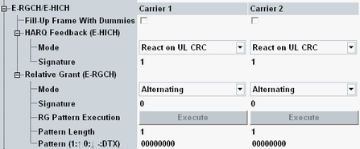

The following settings configure the contents of the enhanced DCH relative grant channel (E-RGCH) and the enhanced DCH hybrid ARQ indicator channel (E-HICH) per UL carrier.
The E-RGCH carries relative grants, used in the scheduling process. The relative grants incrementally adjust the allowed UE transmit power and thus the maximum amount of uplink (E-DCH) resources the UE can use.
The E-HICH carries the HARQ acknowledgment indicator, representing the positive or negative acknowledgment of a previous uplink transport block.
To enable the E-HICH and the E-RGCH, see "HSUPA Downlink Channels". To enable HSUPA, see "Connection Configuration".

With a 10 ms TTI, the E-RGCH and E-HICH are transmitted for 12 slots per frame. During the remaining slots, it is possible either to switch off the channels (DTX) or to continue sending to maintain the channel power (fill-up with dummies). This setting has no effect for 2 ms TTIs.
In a scenario with dual uplink carrier, individual values can be set per carrier.
Option R&S CMW-KS401 is required.
Remote command:The following parameters configure the HARQ feedback transmitted via the E-HICH.
In a scenario with dual uplink carrier, individual values can be set per carrier.
Option R&S CMW-KS401 is required.
Option R&S CMW-KS405 is also required for dual carrier HSPA.
Type of the HARQ acknowledgment indicator sequence transmitted via the E-HICH.
You can, for example, send an alternating sequence or an all ACK or all NACK or all DTX sequence. ACK corresponds to 1, NACK to 0.
The selection "React on UL CRC" sends: ACK for correct UL CRC, NACK for UL CRC error, DTX if no E-DPCCH is detected.
Remote command:E-HICH signature used to separate the E-HICH from the E-RGCH and from the E-HICH/E-RGCH allocated to other UEs.
The value is equal to the "Sequence index l" defined in 3GPP TS 25.211. Configure different values for the E-HICH signature and the E-RGCH signature.
Remote command:The following parameters configure the relative grant sequence transmitted via the E-RGCH.
In a scenario with dual uplink carrier, individual values can be set per carrier.
Option R&S CMW-KS401 is required.
Option R&S CMW-KS405 is also required for dual carrier HSPA.
Type of the relative grant sequence transmitted via the E-RGCH.
You can send an alternating sequence or an all UP or all DOWN or all DTX sequence. UP corresponds to 1, DOWN to 0 and DTX to -.
The selections "Continuous" and "Single Pattern + All DTX" transmit a configurable pattern continuously or once. For configuration of the pattern, see "Pattern Length, Pattern".
The selection "Alternating H-ARQ Cycle" sends: 11110000… for a 10 ms TTI and 1111111100000000… for a 2 ms TTI. Thus it ensures an alternating 1010… pattern for every H-ARQ cycle.
Remote command:E-RGCH signature used to separate the E-RGCH from the E-HICH and from the E-HICH/E-RGCH allocated to other UEs.
The value is equal to the "Sequence index l" defined in 3GPP TS 25.211. Configure different values for the E-HICH signature and the E-RGCH signature.
Remote command:Triggers the execution of a single relative grant pattern ("Mode" = "Single Pattern + All DTX"). The button is irrelevant for the other modes.
In a scenario with dual uplink carrier, individual values can be set per carrier.
Option R&S CMW-KS401 is required.
Option R&S CMW-KS405 is also required for dual carrier HSPA.
Remote command:Specify a single pattern for the modes "Continuous" and "Single Pattern + All DTX".
The maximum allowed pattern length depends on the TTI mode.
In a scenario with dual uplink carrier, individual values can be set per carrier.
Option R&S CMW-KS401 is required.
Option R&S CMW-KS405 is also required for dual carrier HSPA.
Remote command: